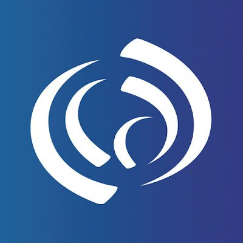
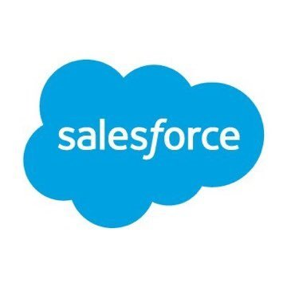

Ken Cavagnolo, PPS Board, Zone 1
Public education is the only shot most of us have at a future, and that's dying in America. I'm a nobody with a simple plan to fight back.
My Platform
Why vote for me?
The world isn't fair. In America, there's a clear divide between the haves and the have-nots, and
most of us fall into the latter group. I'm tired of hearing about "common sense" and "fairness" from
wealthy, powerful people who only want more for themselves and less for everyone
else — especially regarding education.
Public education is underfunded on purpose. State and local governments deliberately keep funding
low, treating education like a luxury for the rich instead of a right for all. That ends now. I'm
here to attack underfunding, close the achievement & equity gap, increase teacher retention & pay,
and make public education a priority that state-level politicians can't ignore. It's time to stop
letting the wealthy hold education hostage for their own gain.
I'm fighting for the people who work hard every day but are still overlooked, marginalized, and
silenced. These people carry the weight of economic inequality and need someone to stand up for
them. Public education isn't just about superficial test scores and grades — it's about giving every
kid the tools to think critically, ask questions, and solve problems. It's about giving them the
chance to change their future.
If you're tired of the same old safe candidates and want someone ready for a streetfight over what's
right, if you want a politician who knows we're in a battle for our future and is not afraid to make
waves, if you've got an unlit torch, then I'm your match.
Problem — Chronic Underfunding
Solution — Extract cash from those who stole it from our schools without touching your taxes
Portland's schools are broke because Oregon's tax system is a scam: Measure 97 defeated, Nike's Sweetheart Deal with Governor Kitzhaber, Single Sales Factor & Intel, Portland Business Alliance Lobbying, and more. Working-class families pay 9% of their income in taxes. The wealthy pay 6%. Corporations like Nike and Intel pay less than a food truck. This isn't an accident — it's theft. We're robbing kids to subsidize billionaires. You can't "support schools" while voting against taxing the rich. That's like saying you love forests but hate trees
Problem — Equity & Achievement Gaps
Solution — Target funding and resources on the classroom and not overhead and capital projects
We've turned poverty into a life sentence. If you're born poor in Portland, your school gets fewer books, broken heaters, and a police officer instead of a therapist. That's not equity — that's economic servitude. Telling a kid in Albina to 'pull themselves up by their bootstraps' while their school lacks textbooks is like telling someone to build a house with no tools. It's cruelty disguised as advice.
Problem — Teacher Retention & Compensation
Solution — Money. Money. Money.
We pay teachers like babysitters and wonder why they quit. Meanwhile, Portland spends $3 million yearly on consultants to write reports no one reads — I live this daily. Priorities, people. If we can sit on $1Bn in unused city funds and waste resources ego stroking the vanity of local politicians, we can damn well pay teachers enough to live in the city they serve.
Problem — The State-Level Showdown
Solution — Don't just advocate, make noise, become a disturbance.
We will not let state politicians hide behind corporate lobbyists while our schools suffer. We will mobilize in Salem — in person and online — to confront lawmakers who keep tax loopholes open for big businesses like Nike and Intel. Our teams of parents, teachers, and community members will attend hearings to expose deals that harm our classrooms. We will demand the closure of these tax breaks or face community outrage.
About Me
I grew up in Atlanta and have lived in places like Michigan, Canada, France, and Tennessee, with
extended stays in India, Japan, and South Africa. My journey has shaped who I am, but the fight for
fairness drives me.
I pursued academics as a career and spent years as an astrophysicist,
publishing
research and teaching. But in 2011, I made the brutal leap
to industry leaving my dream
job because there just wasn't a way to make a
living doing it. I became politically aware during the 2000 election, a pivotal moment in American
history, and my core principles have been the same since:
- Solidarity: We may not always agree, but we're in this together, like it or not.
- Humility: We're a small part of the world; our actions should reflect that understanding.
- Compassion: No one can do everything alone; we must see and hear others in their times of need.
- Honesty: Science teaches us to question everything, as should our leaders. We need to acknowledge when we're wrong and do better.
Education
- Georgia Institute of Technology, B.Sc. Physics
- Michigan State University, M.Sc. Astrophysics
- Michigan State University, Ph.D. Astrophysics
- University of Waterloo, Astrophysics Postdoctoral Fellow
-  Observatoire de Cote d'Azur, Astrophysics Postdoctoral Fellow
Career
-
 3B Scientific, Data Scientist
3B Scientific, Data Scientist
-
 Uber, Sr. Data Scientist
Uber, Sr. Data Scientist
- KPMG, Lead Data Scientist
-
 Pilot Company, Principal Data Scientist
Pilot Company, Principal Data Scientist
-  Salesforce, Director, Data Science & Optimization
- CVS Health, Sr. Director, Data Science & AI
Experience
- Instructed and assisted with undergrad and graduate physics and astronomy honors courses
- Advised and mentored numerous PhD and MSc physics students
- Annually served as supervisor for undergraduate research scholars/fellows
- Local Organizing Committee for several large international academic conferences
- Refereed for prestigous academic publications (ApJ, AJ, MNRAS, A&A)
- Active member of the National Scientific Research Society (ΣΞ)
- Active member of the National Physics Honor Society (ΣΠΣ)
- Active member of the American Astronomical Society
- Active member of the American Physical Society
- NASA Center for Astronomy Education collaborator and mentor
- Offered teaching positions at public (via Teach for America) and private secondary schools
- Hands On Science Partnership board member and industry representative
- Hosting and running workshops for the National Science Teaching Association
- American Astronomical Society Beyond Academe Task Force member
- Springboard mentor for experienced professionals leaving their fields for a data science career -- 21 hires to date
Interests
Take Action
We don't win by waiting. We win by fighting. I do not accept donations from anyone, I'm self-funded.